Creativity support · Singapore Management University · 2025–2026
MOTUS
Helping creative intention
take shape through movement.
Motor-Mediated Creativity: Bridging Embodied Skill Training and Digital Expression
Singapore Management University · ACM CHI 2026
MOTUS explores how does learning to control a pen-stylus can support expressive digital drawing. It brings together structured motor practice, feedback informed by expert strokes, and embodied ideation prompts for creative exploration.
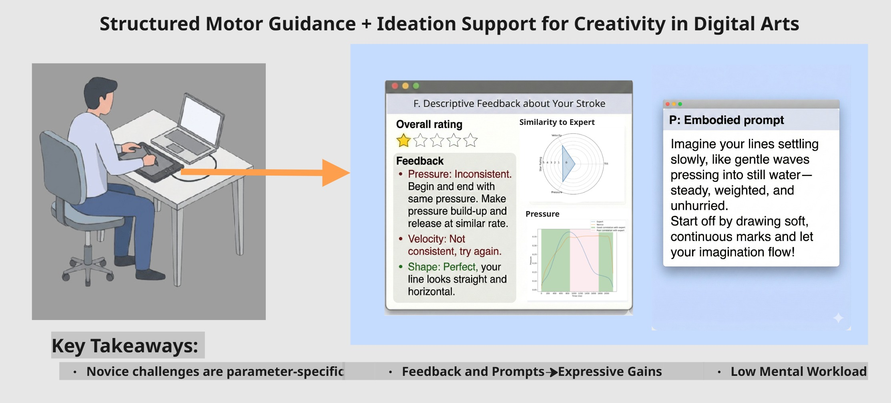
The research question
What if creativity support also trained the hand?
Digital tools offer many ways to make images, but novices can still struggle to translate an intention into a controlled mark. MOTUS investigates motor fluency as a resource for expression: learning how pressure, speed, and movement shape what appears on the canvas.
The interaction
Practice a movement. Understand it. Explore with it.
Practise expressive strokes
Work through stroke primitives that foreground pressure, velocity, and directional control.
Review actionable feedback
Inspect corrective text, similarity summaries, and temporal plots to decide what to adjust.
Apply it creatively
Move into open-ended drawing, using embodied prompts that connect imagined sensations with movement.
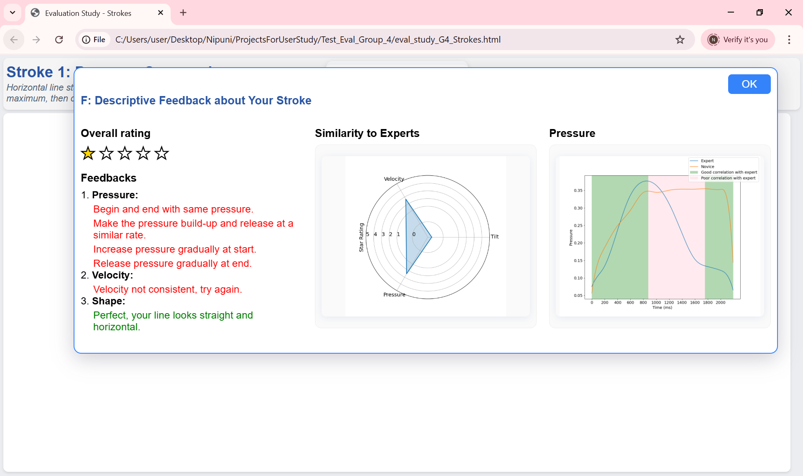
What should I change?
Descriptive feedback turns differences in stroke execution into a concrete next action.
Which parameter needs attention?
The radar view summarises similarity across pressure, velocity, and tilt.
Where did it diverge?
The temporal plot compares pressure over the stroke, helping locate differences during execution.
Explore the interface and feedback designPractice canvas · feedback alternatives · embodied prompts
01 / Keep drawing central
A canvas with guidance when needed
The prototype places the drawing canvas at the centre of the task. A reference preview and task instructions support stroke practice. Feedback is presented after each attempt. In the creative stage, a prompt panel provides a starting point for expression.
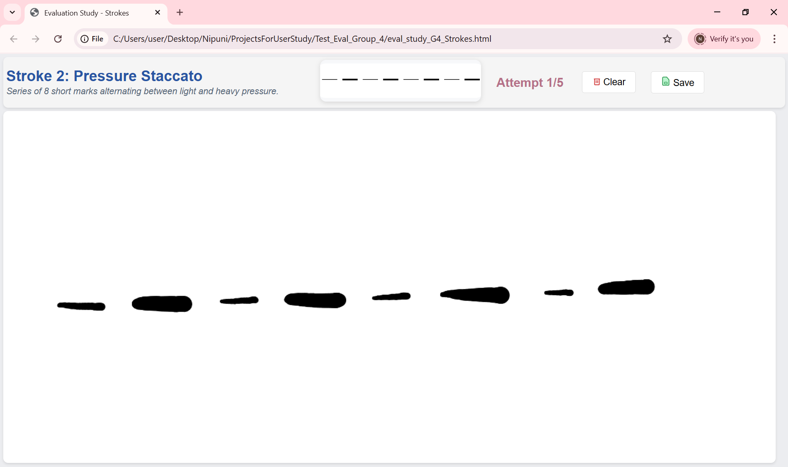
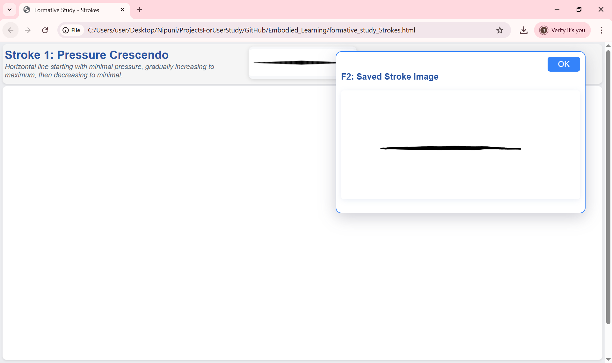
02 / Compare feedback representations
From measurements to interpretable guidance
The formative work explored different ways of presenting stroke feedback. These interface screenshots document analytic graphs, descriptive text, raw metrics, and reference imagery. They show interface alternatives considered during development, rather than a confirmed chronological sequence of redesigns.
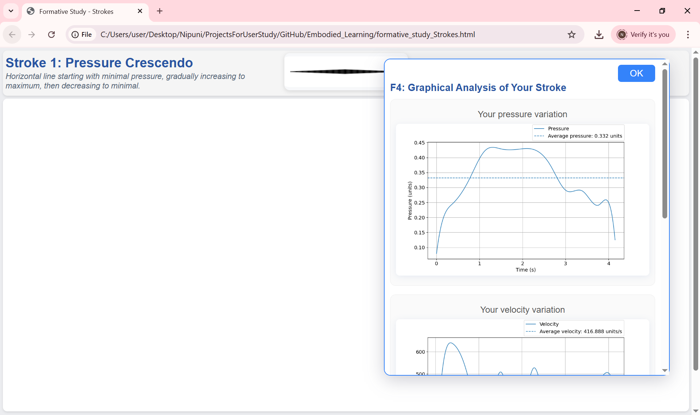
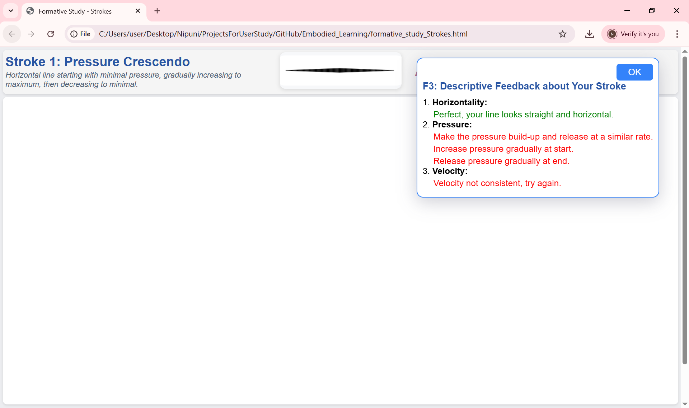
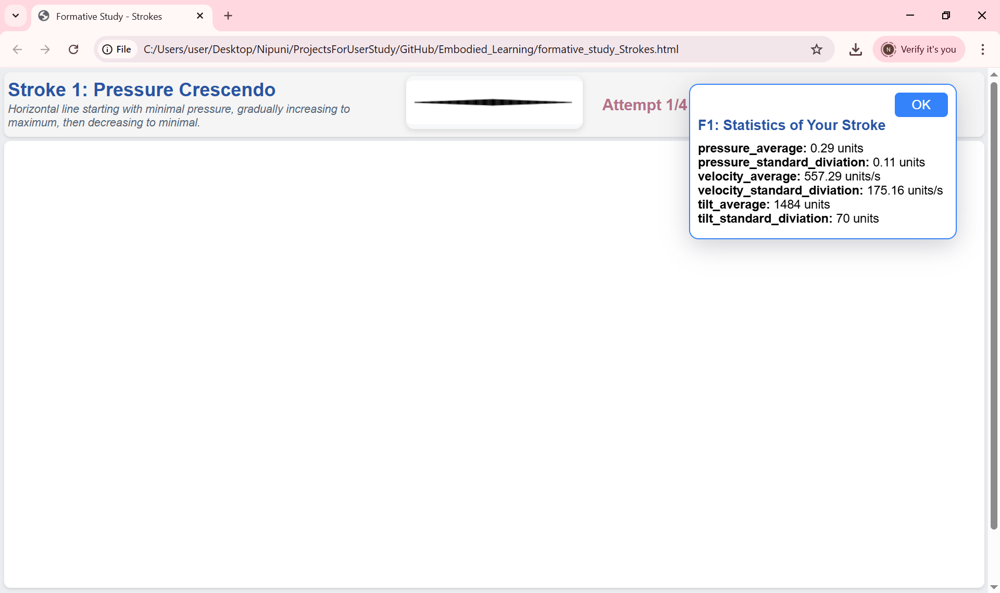

In the formative study, 37 of 42 participants selected descriptive textual feedback as the most useful feedback type. The later interface combines interpretable text with supporting visualisations.
03 / Inspect an example
Make the motor signal visible
These supplied plots are from a single first-attempt example. The pressure graph overlays an expert reference and novice trace; the radar plot summarises parameter similarities. They illustrate feedback presentation, not a before-and-after training comparison.
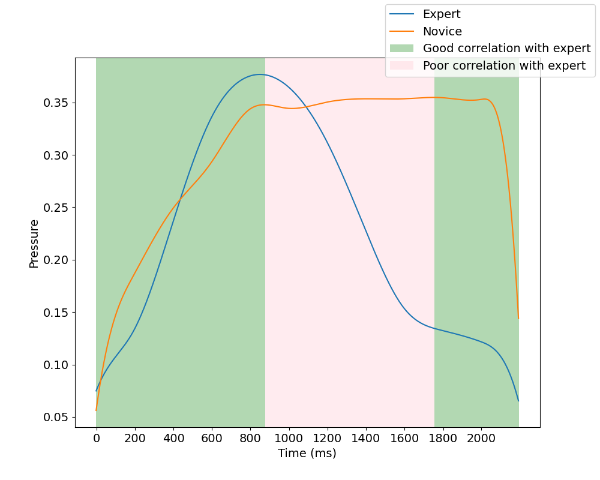
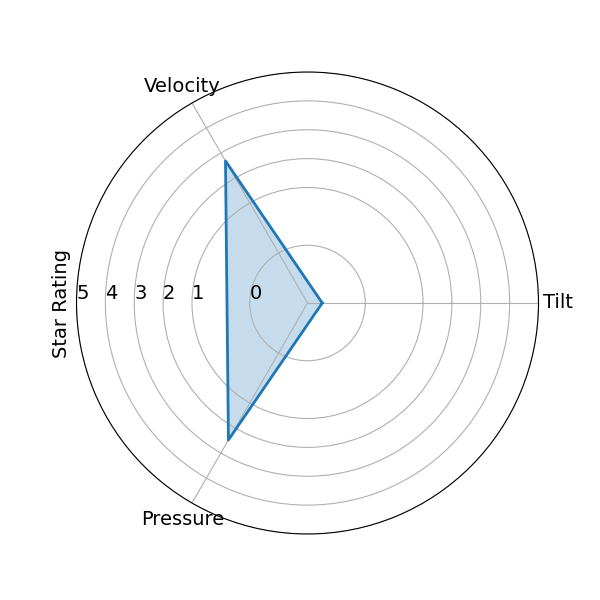
04 / Support expressive exploration
From instructions to embodied imagination
The formative study compared unprompted drawing, generic prompts, and embodied prompts. Embodied prompts frame marks through sensory or physical metaphors, encouraging learners to connect movement with expressive intent.
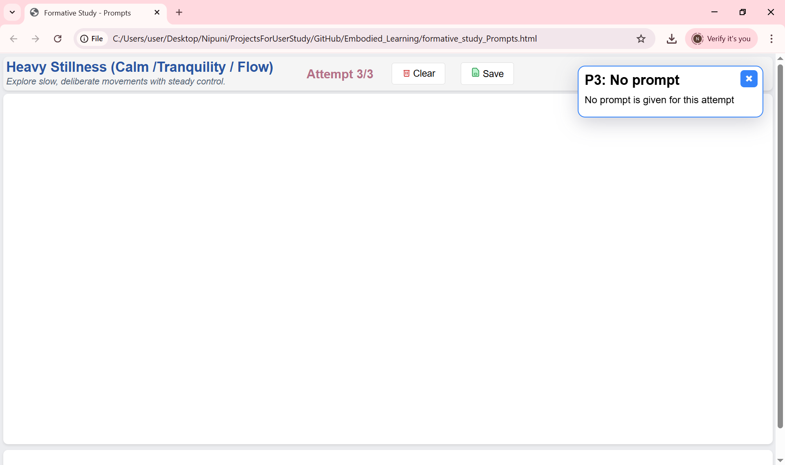
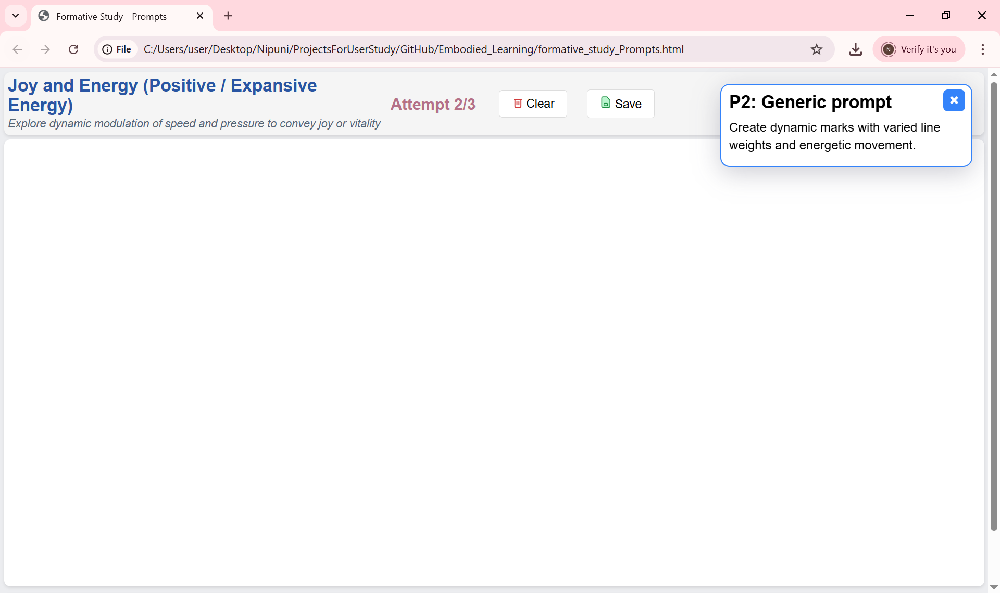
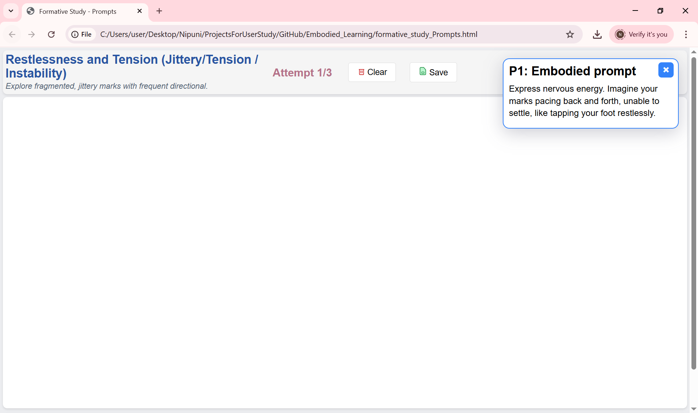
In the formative study, 33 of 42 participants preferred embodied prompts over generic prompts.
Our implementation
Connecting stylus input, feedback, and creative tasks
- Developed the web interface and Python backend, including real-time stylus capture with the Wacom SDK.
- Implemented feedback views combining ratings, corrective text, radar plots, and temporal comparisons.
- Integrated structured practice with prompt-based creative drawing tasks.
- Contributed to formative and controlled studies and quantitative and qualitative analysis.
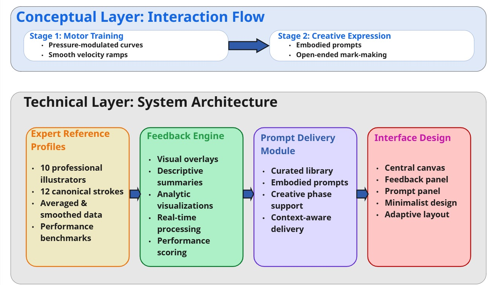
Research evidence
Studying motor fluency and expression
Formative participants
Investigated novice challenges, feedback representations, and prompt preferences.
Controlled evaluation
A 2 × 2 design compared motor feedback and ideation prompts, separately and together.
iPad validation participants
A separate cohort explored the full intervention on another tablet platform.
The published evaluation links gains in measured motor fluency with expert-rated expressive improvement. These findings support motor training as a promising direction for creativity-support tools. However they do not establish long-term retention or generalisation to every form of digital art.
View illustrative drawing pairs Same participant and theme, before and after the intervention
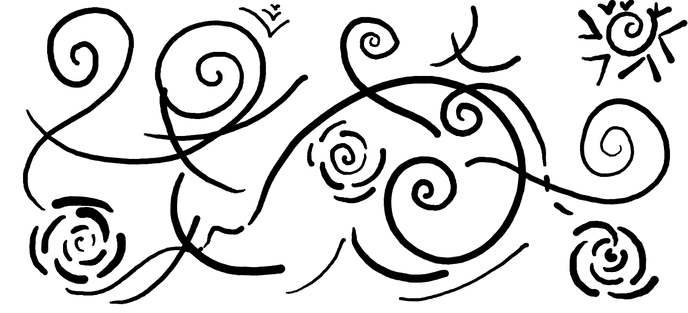
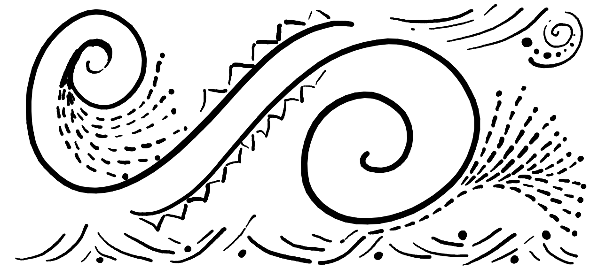
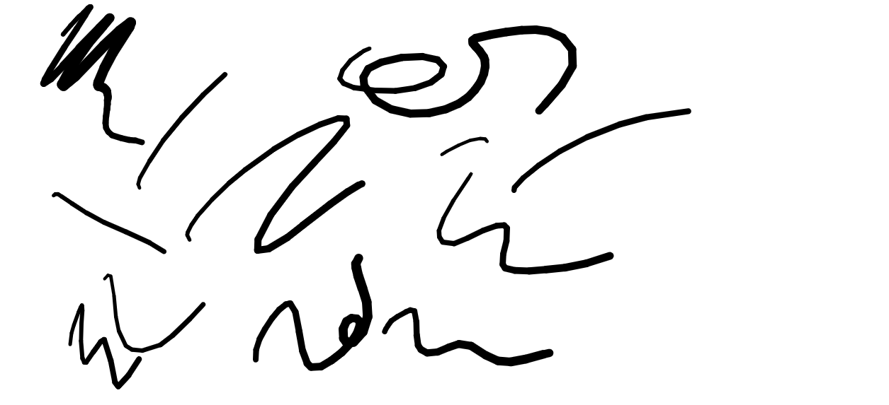
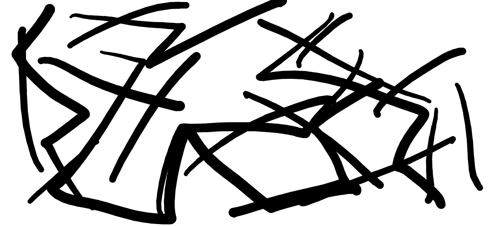
Illustrative samples from Figure 6 of the paper. A single pair does not summarise all participant outcomes or independently demonstrate an intervention effect.
Design takeaway
Support the maker’s skill, as well as the outcome.
For me, MOTUS connects interface design with embodied learning: making feedback understandable, keeping creative decisions with the person, and giving learners a way to connect a physical action with its expressive effect.
Publication & credits
Pasindu Bolonghege, Gevindu Ganganath, Nipuni Arachchige, Paul Benedict Lincoln, and Thivya Kandappu. 2026. Motor-Mediated Creativity: Bridging Embodied Skill Training and Digital Expression. CHI ’26. DOI: 10.1145/3772318.3791935.
Equal-contribution co-author. Paper figures are credited to Bolonghege et al. (2026), licensed under a Creative Commons Attribution 4.0 International License.